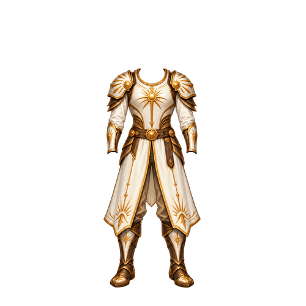
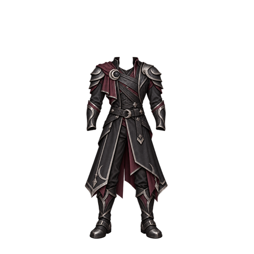
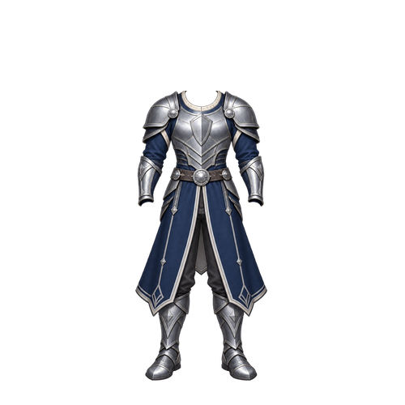
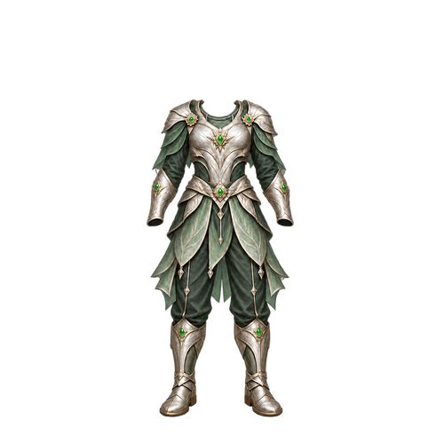
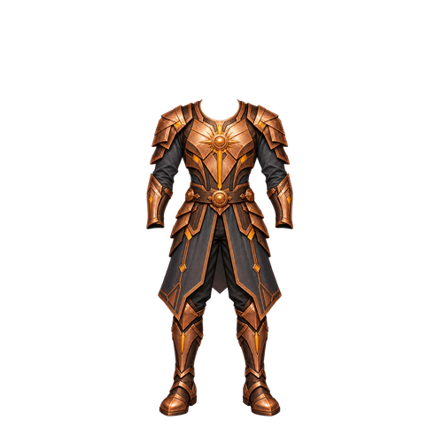
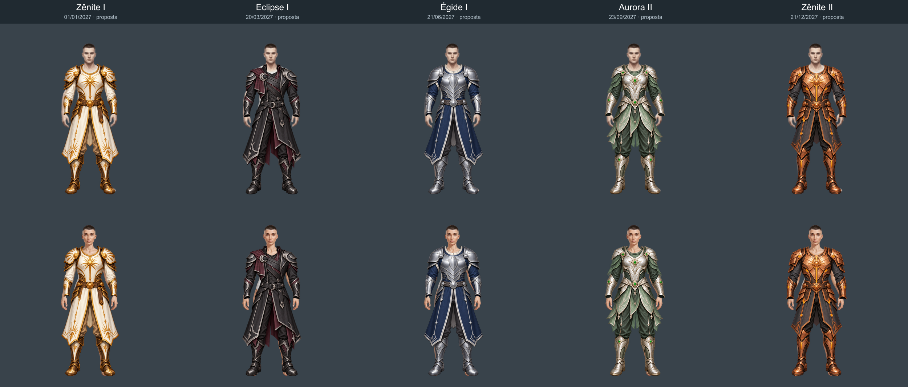

Cinco temporadas · estudos de skin
As cinco paletas aprovadas, em roupas com transparência real. Propostas visuais: ainda há ajustes de mangas e calçados antes de integrar. O Guardião Aurora atual foi preservado.
Zênite I
01/01/2027 · início cadastrado

Eclipse I
20/03/2027 · início cadastrado

Égide I
21/06/2027 · início cadastrado

Aurora II
23/09/2027 · início cadastrado

Zênite II
21/12/2027 · início cadastrado

Comparação nos corpos masculino e feminino

Datas e conteúdo consultados no código local em 12/10/2026. Estas artes não liberam temporadas, missões ou recompensas.